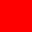
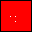
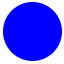
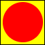
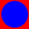
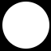
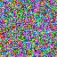
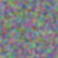
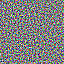

Lua programs are also LuaImg programs, so the Lua hello world program stands:
print "Hello world!"
Create a 32x32 image with 3 channels containing solid red (vec(1,0,0)). Save to a file (can also be written on one line):

my_img = make(vec(32,32), 3, vec(1,0,0))
my_img:save("red.png")
Draw a black border around that image and a few white pixels in it.

my_img:drawLine(vec(0,0),vec(0,31),1,vec(0,0,0))
my_img:drawLine(vec(0,0),vec(31,0),1,vec(0,0,0))
my_img:drawLine(vec(31,31),vec(0,31),1,vec(0,0,0))
my_img:drawLine(vec(31,31),vec(31,0),1,vec(0,0,0))
my_img:draw(vec(10,15),vec(1,1,1))
my_img:draw(vec(15,15),vec(1,1,1))
my_img:draw(vec(15,10),vec(1,1,1))
my_img:save("redb.png")
Initialising a 3 channel + alpha image using a function (computes an antialiased blue circle with alpha):

local sz = vec(64,64)
function init(pos)
local rad = #(pos - sz/2);
local alpha = clamp(30-rad, 0, 1)
return vec(0, 0, 1, alpha)
end
circle = make(sz, 3, true, init)
circle:save("circle.png")
From the circle image, rotate the colour channels (preserving the alpha), and blend onto a solid yellow background, then enlarge it to get a black border:

img = (circle.zxyW .. vec(1,1,0)):crop(vec(-1,-1), vec(66,66), 0)
img:save("circle_bg.png")
Blend the circle image onto red.png:

smaller = circle:scale(vec(32,32),"BICUBIC")
blended = smaller .. open("red.png")
blended:save("circle_bg_red.png")
Extract alpha channel and save it:

my_mask = circle.w
my_mask:save("circle_a.png")
Random RGB noise:

function randvec() return vec(random(), random(), random()) end
my_noise = make(vec(64,64), 3, randvec)
my_noise:save("random.png")
Random noise with gaussian blur. The gaussian(n) function returns an nx1 image that represents a separated normalised gaussian blur kernel. One can also use custom kernels by providing an image instead of using the result of gaussian() -- and these can be provided either in separated form, or as a general rectangular matrix.

my_perlin = my_noise:convolveSep(gaussian(7), true, true)
my_perlin:save("perlin.png")
Subtract the two to create a high frequency noise texture. Generally, using arithmetic to combine images is supported.

((my_noise-my_perlin) + 0.5):save("noise_hifreq.png")